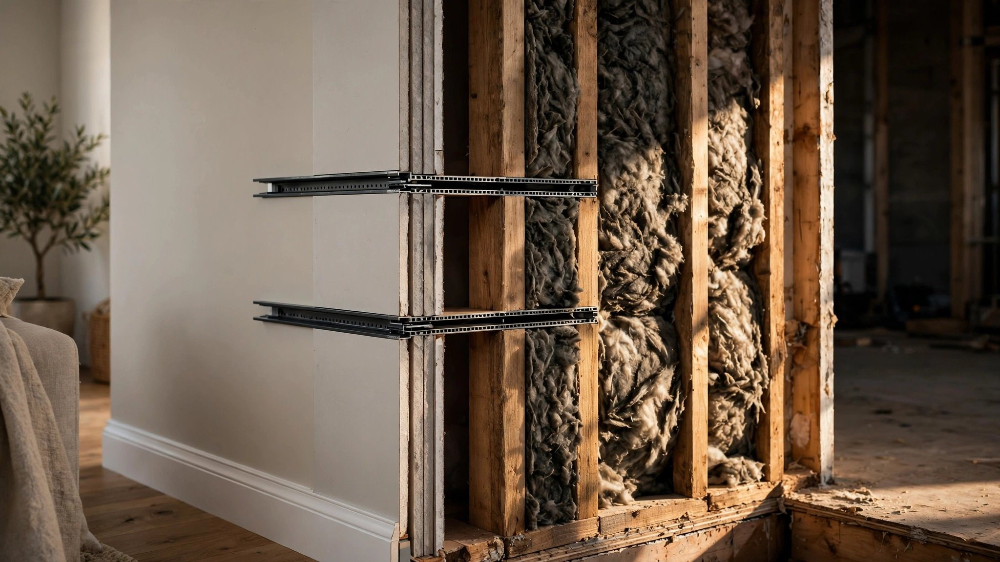

Your Builder Spec'd the Walls for Fire, Wind, and Energy. Nobody Checked Whether You'd Hear the Toilet Flush.

Pull up the International Residential Code. Search for "fire resistance." You will find 847 results spanning chapters on wall construction, floor assemblies, roof systems, and means of egress. Search for "energy." Another 312 results covering insulation R-values, fenestration U-factors, duct leakage limits, and mandatory blower door tests. Search for "wind." 276 results with exposure categories, design pressures, and fastener schedules calibrated to the nearest mile per hour.
Now search for "sound transmission," "STC," and "acoustic." Zero, zero, and zero. "Noise" returns two results, both referring to mechanical equipment vibration isolation, neither to sound traveling through walls between rooms where people sleep, argue, flush toilets, and attempt to have private conversations six inches of drywall and empty air from the person who can hear every word.
What STC 33 sounds like
A standard interior wall in an American single-family home consists of 2x4 studs at 16 inches on center, one layer of half-inch drywall on each side, no insulation in the cavity. That assembly has a Sound Transmission Class rating of 33. At STC 33, loud speech is clearly understood through the wall. Normal conversation is audible, not as distinct words necessarily, but as an unmistakable human presence on the other side of what the building code considers a finished, code-compliant partition.
STC 40 is what acousticians call the privacy threshold. Below it, you know your neighbors exist. STC 50 is where loud speech becomes barely audible. STC 60 and above is what buyers imagine. They imagine that closing a door means closing a conversation.
The gap between STC 33 and STC 50 is not a minor technical detail. It is the difference between a bedroom where you can sleep while someone watches television in the adjacent room and a bedroom where you cannot. Seventeen points on a logarithmic scale. Roughly a tenfold reduction in transmitted sound energy. And closing that gap during construction, before the drywall goes up and the insulation crews move to the next house, costs between $1 and $5 per square foot of wall area.
Closing it after move-in costs $10 to $30 per square foot according to 2026 pricing data from Angi and Fixr, a figure that includes demolition of existing drywall, installation of resilient channels or sound-isolation clips, mineral wool insulation, a new layer of 5/8-inch drywall, and refinishing. For a single 10-by-8-foot wall, the math is $80 to $400 during construction versus $800 to $2,400 as a retrofit; multiply by twelve interior walls in a typical four-bedroom home and the cost differential becomes $960 to $4,800 versus $9,600 to $28,800.
A factor of ten. For work that takes a framing crew an extra twenty minutes per wall.
Nobody made the code care
Fire got into the code because people died. Wind load calculations exist because hurricanes flattened subdivisions and insurance companies demanded structural accountability. Energy performance standards arrived through the 1992 Energy Policy Act and its descendants, driven by utility costs and federal climate policy, and each of these code provisions traces to a specific forcing function: a catastrophe, a lobby, a federal mandate, or an actuarial table that made the cost of inaction more expensive than the cost of compliance.
Sound has none of these. Nobody dies from a wall with poor acoustic performance. No insurance company adjusts premiums based on STC ratings. No federal agency tracks the cumulative health effects of chronic noise exposure in homes built to code minimums, even though the World Health Organization has classified nighttime noise above 40 dB as a risk factor for cardiovascular disease and cognitive impairment in children. No forcing function exists, so no code does either.
ICC tried, once. G2-2010, the Guideline for Acoustics, stated plainly that "the current level and approach of sound isolation requirements in the building code need to be upgraded" and that existing provisions are "currently insufficient to meet occupant needs." That was sixteen years ago. The guideline remains a guideline, not a code requirement. It has no enforcement mechanism. Jurisdictions that adopt the IRC are not required to adopt G2, and virtually none do for single-family residential.
Multifamily is different, barely. The IBC requires STC 50 and IIC 50 for assemblies separating dwelling units, measured per ASTM E90 and E492, but those are laboratory ratings, and field performance measured as FSTC and FIIC under ASTM E336 and E1007 routinely falls 5 to 15 points below the lab numbers. A study cited by ACENTECH, one of the country's oldest acoustic engineering firms, documented a wall with a laboratory STC of 67 that dropped more than 10 points in field testing because of flanking paths: sound traveling through the continuous floor slab, through shared ductwork, through back-to-back electrical outlet boxes that create direct air channels between units.
"We see walls that are supposed to have a field-performing 40 STC," an industry acoustics consultant told Multi-Housing News. "More often they're performing in the mid- to high 20s." STC 25 means you can follow a conversation through the wall as if it were an open window. At STC 28, you hear not just voices but the specific words, the pauses, the sigh your neighbor makes at 11 PM when she sits down on the couch and turns on a show you now know the theme song to.
AI can hear what the inspector cannot
Researchers at the Université du Québec à Chicoutimi, in collaboration with Lund University, published a series of papers between 2022 and 2025 applying artificial neural networks to acoustic prediction in building assemblies. Their models, trained on 252 standardized laboratory measurements of lightweight wooden floor and wall structures, predict the weighted airborne sound reduction index with a maximum error of 2 dB. For context, trained human listeners in controlled conditions can reliably distinguish a 3 dB difference. The AI predicts sound transmission through a wall assembly more precisely than most people can perceive it.
The model takes physical and geometric characteristics as inputs: material type and thickness, density, stud depth and spacing, resilient channel depth and spacing, total assembly density, the volume of the receiving room. It outputs a predicted sound insulation curve across the full one-third octave band spectrum from 50 to 5,000 Hz, the same frequency range covered by laboratory testing under ASTM E90.
Impact sound prediction is harder. Those same researchers reported errors up to 5 dB for the weighted normalized impact sound pressure level, which captures footfall noise, dropped objects, and the kind of low-frequency structure-borne sound that makes upstairs neighbors in multifamily buildings the subject of passive-aggressive notes taped to mailboxes. Feature attribution analysis showed that the thickness of insulation materials, the density of cross-laminated timber or concrete floating floors, and the total density of the floor structure matter most for prediction accuracy.
What the neural network cannot yet do is predict flanking. The 10-point lab-to-field gap that ACENTECH documented arises from sound traveling around the rated assembly, not through it. Flanking paths are three-dimensional, installation-dependent, and often invisible: a continuous joist bay, an unsealed pipe penetration, an HVAC boot that connects two rooms through a sheet-metal tunnel. Predicting flanking performance requires a model of the entire building, not just the partition. No AI system handles that for residential construction.
But predicting direct transmission is already valuable. A builder choosing between a standard 2x4 wall with no insulation (STC 33) and the same wall with mineral wool batts and resilient channels (STC 52) does not need a flanking analysis. Nineteen points separate the two on the STC scale. Even if flanking paths cost 5 points in the field, the upgraded wall still performs at STC 47, twelve points above the privacy threshold. A builder who skips the upgrade delivers STC 33, seven points below privacy, and no amount of flanking analysis matters because the wall itself is the problem.
Fifty-three percent of buyers want it and zero percent specify it
The National Association of Home Builders surveyed buyers on what features they consider essential or desirable. Soundproofing between rooms came in at 53 percent. More than half of home buyers want acoustic privacy, and virtually none of them know how to ask for it in a purchase agreement, because the industry has never given them the vocabulary.
Buyers specify granite countertops. They specify engineered hardwood floors and brushed-nickel hardware and a specific shade of exterior paint that they found on a Pinterest board at 2 AM. They do not specify STC 50 party walls or IIC 55 floor-ceiling assemblies because they have never heard those terms and because the builder's standard specification sheet does not include them and because the model home, with its carefully orchestrated music playing from a Sonos speaker in every room, does not reveal that the master bathroom shares a wall with the guest bedroom and that wall is STC 33 and the guest will hear everything.
Builders know. They know because warranty callbacks for noise complaints are among the most expensive to remediate, since the fix requires demolishing finished walls, and among the most frustrating to adjudicate, since no code was violated and the buyer signed off on a spec sheet that said nothing about acoustics. Technically, the builder is correct; experientially, the buyer is miserable; it met code.
What the upgrade actually costs
The arithmetic is simple enough to fit on a napkin. A standard 2x4 interior wall with one layer of half-inch drywall and no insulation costs approximately $3.50 to $5.50 per square foot installed, depending on market. Upgrading that wall to an acoustically competent assembly adds three components:
Mineral wool insulation (Rockwool Safe'n'Sound or equivalent) costs $1 to $2 per square foot installed, takes the same time as fiberglass batts, and adds approximately 8 STC points.
Resilient channel on one side runs $150 to $200 per wall, roughly $1.50 to $2.50 per square foot, decoupling the drywall from the studs to break the vibration path and adding 5 to 10 STC points depending on installation quality.
A second layer of 5/8-inch drywall on one or both sides costs $1.50 to $3.50 per square foot, adding mass that blocks low-frequency sound more effectively than any other single intervention.
Total upgrade cost: $4 to $8 per square foot of wall area. For a 10-by-8-foot bedroom wall, that is $320 to $640 in additional material and labor. Performance goes from STC 33 to STC 52-56 depending on which combination of interventions the builder chooses. Not luxury, not exotic, just commodity materials available at any building supply distributor, installed by the same drywall crew that was going to be there anyway.
For a 2,000-square-foot home with twelve interior walls averaging 80 square feet each, the total acoustic upgrade runs $3,840 to $7,680. On a $400,000 home, that is 1 to 2 percent of the purchase price. A buyer who skips this upgrade and later retrofits four walls (the master suite, the home office, two kids' bedrooms) at $10 to $30 per square foot will spend $3,200 to $9,600 per wall, plus the cost of being unable to use those rooms during demolition and reconstruction.
What this means for you
If you are a builder: add an acoustic upgrade package to your options sheet. Price it at $5,000 to $8,000 for a standard four-bedroom home. Position it between the lighting package and the smart-home package. Your cost is $3,800 to $7,700. Your margin is the same as your other upgrades, and your warranty callback exposure on noise complaints drops to near zero, which alone justifies the line item. If you want to get ahead of the curve, run the Bader Eddin neural network model on your standard wall assemblies and publish the predicted STC ratings in your specification sheet. No other builder in your market is doing this. It costs nothing.
If you are buying a new home: ask for the STC rating of the interior walls. Not the party walls, if attached. The interior walls, the ones between your bedroom and the bathroom, between the nursery and the room where you plan to work from home at 6 AM while the baby sleeps. If the builder cannot answer, they are using standard 2x4 construction with no acoustic treatment, and you will hear everything. Negotiate the acoustic upgrade into the purchase contract, in writing, with a sentence like: "Interior walls between bedrooms and between bedrooms and bathrooms to be constructed to achieve a minimum field-tested STC of 45." That one sentence, added to a purchase agreement, changes what the framing crew does on a Tuesday afternoon, and it costs you $5,000 to $8,000 while saving you $15,000 to $30,000 in future retrofit costs, plus the sanity that comes from not hearing your teenager's music through the wall at midnight.
If you are an architect: the neural network models are published, peer-reviewed, and freely accessible. The Bader Eddin team's methodology uses standard physical parameters you already know or can calculate from your assembly specifications. Run your wall details through the model before construction documents go out. Include predicted STC ratings in your interior partition schedule the same way you include fire ratings, and if the model shows STC 33, redesign the assembly. It takes five minutes and one additional line on the spec sheet, and it separates your practice from every other firm in your market that treats interior acoustics as someone else's problem.
Limitations
The cost comparison in this article uses 2026 retail pricing from Angi and Fixr, which reflect national averages; actual costs vary significantly by market, with coastal and union markets running 30 to 50 percent higher. The Bader Eddin neural network model was trained on lightweight wooden floor structures and CLT assemblies, not standard North American light-frame residential walls; direct applicability to 2x4 and 2x6 stick-framed construction has not been independently validated, though the physical principles (mass, decoupling, absorption) transfer. Field STC performance depends on installation quality and flanking paths that no current AI model predicts for residential buildings. The 53 percent buyer preference figure from NAHB reflects a general survey of desirable features, not a willingness-to-pay study; actual demand elasticity for acoustic upgrades in residential construction is not established. The ICC G2-2010 guideline, while authoritative, represents one standards body's assessment and has not been adopted into the IRC. This article does not address Impact Insulation Class requirements, which govern footfall and structure-borne sound and are equally absent from single-family codes.